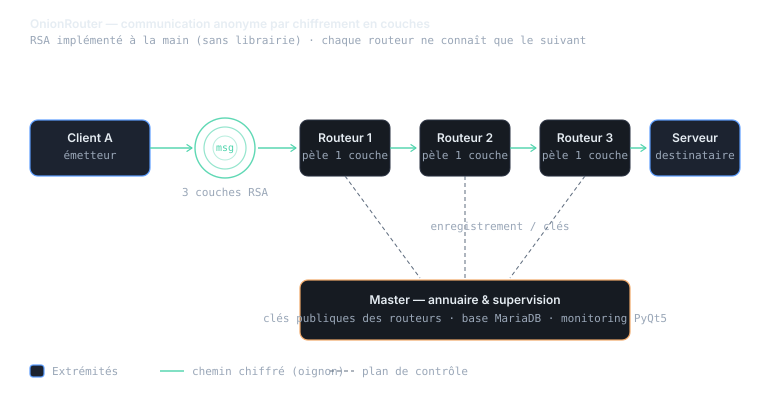

01 Contexte
Pourquoi
Comprendre en profondeur l'anonymat réseau et la cryptographie en les reconstruisant, plutôt qu'en les consommant comme une boîte noire.
Qui
Projet en binôme (« RayAnit »), dans le cadre de la SAÉ 3.02 et de la ressource programmation.
Quoi
OnionRouter : deux clients communiquent anonymement à travers un réseau de routeurs virtuels, message chiffré en couches.
Où
Architecture distribuée sur plusieurs machines/VM (client Windows, routeurs Linux, master).
Quand
Semestre 3 — SAÉ « Développer des applications communicantes ».
Comment
Python, RSA implémenté manuellement, protocole réseau maison, supervision PyQt5 et base MariaDB.
02 Actions, traces & preuves
Le cahier des charges interdisait toute librairie de cryptographie externe : tout a dû être reconstruit mathématiquement.
- RSA « maison » : génération des clés (calcul de p, q, n, e, d), chiffrement et déchiffrement modulaires (c = mᵉ mod n), avec un algorithme de découpage par blocs (chunking) pour dépasser la limite de taille du RSA standard.
- Routage en oignon : le message est encapsulé dans plusieurs couches de chiffrement, pelées une à une par les nœuds intermédiaires — chaque routeur ne connaît que le suivant.
- Architecture distribuée séparant strictement le client (interface utilisateur), les routeurs (transport) et le master (annuaire + base de données).
- Interface de supervision en PyQt5 : visualisation de la topologie en temps réel, état actif/inactif des routeurs et tableau des logs.
- Automatisation : un script Bash lance automatiquement plusieurs routeurs dans des terminaux séparés, et un serveur de test simule le destinataire final.
Le code est organisé proprement (modules common, master, router, client), documenté dans un README détaillé avec guide d'installation, section dépannage et journal de bord versionné.
Dépôt GitHub
Code source complet, README d'installation et journal de bord.
github.com/Ryn-s/Onion_Router ↗
03 Projet rattaché
OnionRouter — routage en oignon
SAÉ 3.02 · binômeCommunication anonyme par chiffrement en couches sur un réseau de routeurs virtuels. 98,7 % Python, RSA reconstruit à la main, supervision graphique et base de données.
04 Lien avec le référentiel
Composantes essentielles mises en œuvre dans OnionRouter
Réflexivité
Quelle difficulté ai-je rencontrée ?
Le RSA standard ne peut chiffrer qu'un message plus petit que la clé. Dès qu'on envoyait une vraie phrase, le chiffrement échouait. Comprendre pourquoi — et pas seulement contourner — m'a demandé de revenir aux maths derrière l'algorithme.
Comment l'ai-je dépassée ?
J'ai conçu un algorithme de découpage en blocs : le message est segmenté, chaque bloc est chiffré séparément, puis reformaté avec un protocole maison pour être reconstitué à l'arrivée. Le fait d'avoir codé RSA moi-même, sans librairie, m'a justement donné la maîtrise nécessaire pour intervenir à ce niveau.
Qu'ai-je proposé ou décidé ?
J'ai poussé pour une séparation stricte client / routeurs / master, et pour une interface de supervision. Ce n'était pas obligatoire, mais ça rend le système observable : on voit la topologie et les logs, ce qui a énormément aidé au débogage et rend le projet présentable.
En quoi est-ce généralisable ?
Découper un problème trop gros en unités traitables, soigner l'observabilité d'un système distribué, et documenter pour qu'un tiers puisse réinstaller le projet : ce sont des réflexes de développeur que je réutilise directement dans mes applications en microservices (compétence Développer).